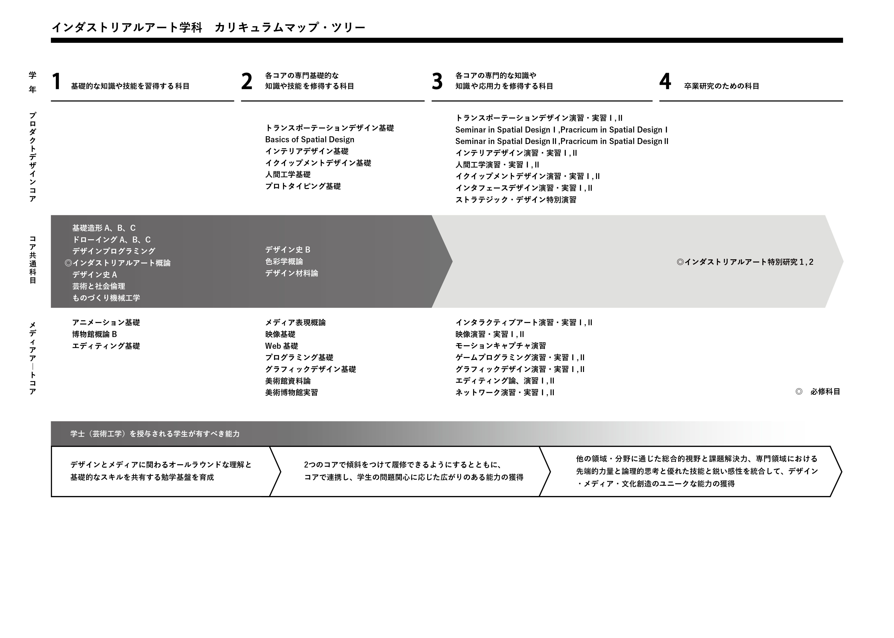

About
New research born from integrating engineering and cultural fundamentals

What is aim of the Department of lndustrial Art? To integrate engineering and design, bring together the fundamentals of technology and culture, to pursue the leading edge where skilled craftsmanship meets information technology refining both technology and sensibility, and resulting in new value creation.
2 Cores, 12 Studios
The Department of Industrial Art has two cores, Product Design, and Media Creation, and 12 studios. Each studio's areas of specialization involve skilled crafts and information media, and each liaise differently, to explore the latest in new value creation.
Society today needs designers ready to think big
We are proud of the Department of Industrial Art, Faculty and Graduate School of System Design's unique pairing of product-related and media-related design disciplines within the Metropolitan University's science and engineering departments. Design is not just about creating form, but it's rather about playing an important role in the creation of new products and trends, which the creation is of the concept, it's architecture, or the production and integration of its application. Designers today must not only have specialist knowledge, but they must also be able to take initiative To achieve this, we encourage students to take interest in not only their own specialization, but also the wider world of science and technology, culture and social sciences, popular products and media, and utilize our facilities to explore new types of design by drawing on all of them. Our curriculum is based on : 4 years of departmental study followed by 2 years of hands-on professional specialization.
Course Model
